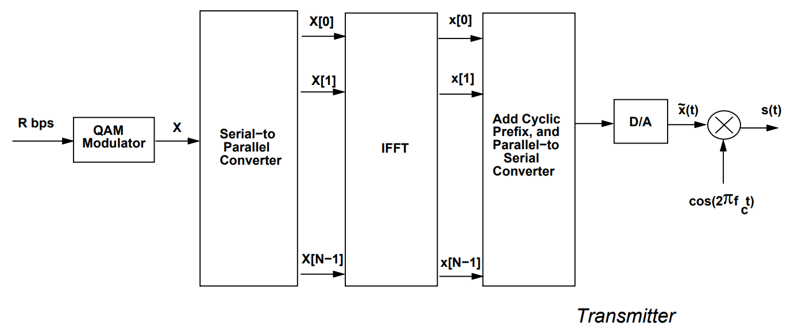
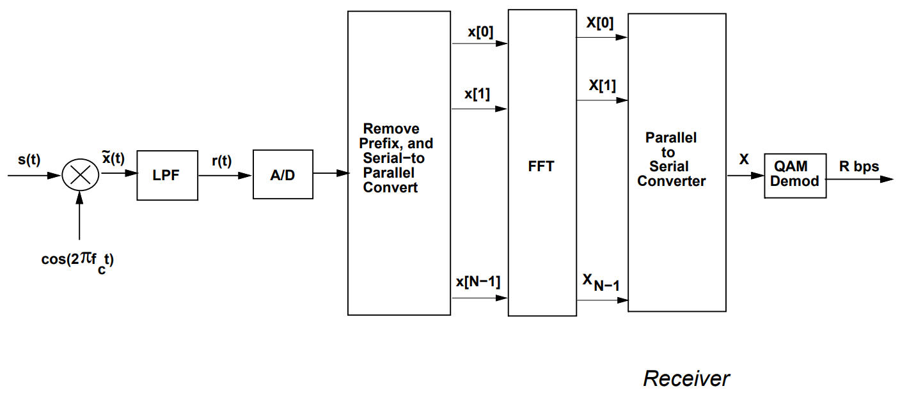

Orthogonal Frequency Division Multiplexing
We start with a data stream that is encoded using a QAM constellation, resulting in a complex symbol stream.
This set of symbols will now be sent across a set of narrowband channels.
We denote this sequence by:
These are effectively the discrete frequency components of the modulator output (s(t)).
Transmitter
1. Series-to-Parallel and IFFT
These symbols are passed through:
- A series-to-parallel converter
- Followed by an N-point IFFT to convert them into time-domain samples:
2. Parallel-to-Series and Cyclic Prefix
- The time-domain samples are converted back to serial form
- A cyclic prefix of length ( \mu ) is added (†)
3. Digital-to-Analog and RF Modulation
- The resulting signal is converted to analog (D/A)
- Modulated using a carrier frequency

*Figure 1: OFDM transmitter schematic*Channel
- The transmitted signal is distorted by the channel (modeled as a FIR filter ( h[n] ) of length ( \mu )) and corrupted by noise ( \nu[n] ).
- The received analog signal ( r(t) ) is down-converted to baseband and sampled:
Receiver
1. Cyclic Prefix Removal and FFT
The cyclic prefix (first samples) is removed
The remaining samples are:
- Converted to parallel form
- Passed through an FFT block to recover frequency-domain symbols:
where:
- : flat-fading channel gain for the -th subcarrier
- : noise in frequency domain
2. QAM Demodulation
- The FFT output is converted to serial
- QAM demodulation and estimation is performed to recover the original data

*Figure 2: OFDM receiver schematic*Cyclic Prefix
The cyclic prefix is added to convert the linear convolution from the channel into a circular convolution, which is compatible with the DFT framework.
With a cyclic prefix:
This would not hold if the convolution were linear.
Further mathematical details have been omitted.